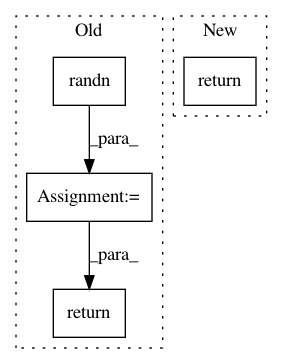

b0eecef1c8acdfe6e65f1e96ff6e26d2bc43e7db,gpytorch/lazy/diag_lazy_tensor.py,DiagLazyTensor,zero_mean_mvn_samples,#DiagLazyTensor#Any#,153
Before Change
def zero_mean_mvn_samples(self, num_samples):
if self.ndimension() == 3:
base_samples = torch.randn(
num_samples, self._diag.size(0), self._diag.size(1), dtype=self.dtype, device=self.device
)
else:
base_samples = torch.randn(num_samples, self._diag.size(0), dtype=self.dtype, device=self.device)
samples = self._diag.unsqueeze(0).sqrt() * base_samples
return samples
After Change
def zero_mean_mvn_samples(self, num_samples):
base_samples = torch.randn(num_samples, *self._diag.shape, dtype=self.dtype, device=self.device)
return base_samples * self._diag.sqrt()
In pattern: SUPERPATTERN
Frequency: 3
Non-data size: 4
Instances
Project Name: cornellius-gp/gpytorch
Commit Name: b0eecef1c8acdfe6e65f1e96ff6e26d2bc43e7db
Time: 2018-11-09
Author: balandat@fb.com
File Name: gpytorch/lazy/diag_lazy_tensor.py
Class Name: DiagLazyTensor
Method Name: zero_mean_mvn_samples
Project Name: cornellius-gp/gpytorch
Commit Name: a5eb8d66cf4d433cb5fd0a2cb5cd229077ea54f4
Time: 2019-01-02
Author: gpleiss@gmail.com
File Name: test/lazy/test_cached_cg_lazy_tensor.py
Class Name: TestCachedCGLazyTensor
Method Name: create_lazy_tensor
Project Name: cornellius-gp/gpytorch
Commit Name: 17e18750dd0b981460903ae631580d1d200509b5
Time: 2018-09-21
Author: balandat@fb.com
File Name: test/lazy/test_mul_lazy_tensor.py
Class Name:
Method Name: make_random_mat